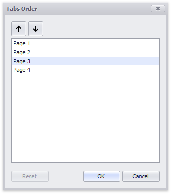
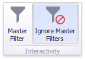

Tab Container
The Tab container dashboard item allows you to split the dashboard layout into several pages. Common filter controls for large elements in a dashboard can be located on a separate tab page.

Overview
To create a tab container, use the Tab Container button in the Home ribbon tab:

A newly created tab container contains an empty tab page (Page 1).

Click the + (plus) icon to add an empty page to the tab container. You can use drag-and-drop to add dashboard items to a tab page and manage the layout. Tab containers cannot be nested, so you cannot add a tab container to another tab container. However, a tab container can contain item groups.
See the Dashboard Item Caption topic to learn how to manage a tab container's caption.
Tab Order
To change the tab page order, click the Reorder Tabs button on the Tab settings group.

The Tabs Order dialog is invoked.

Click up and down arrows to change the order of the tab pages in the tab container.
Display Item as Page
The tab caption is above the caption of the content element on the page. If a tab page contains a single element, the Display Item as Page feature is activated. It merges the dashboard item with a tab page and displays a single caption, as illustrated below.

To disable the Display Item as Page feature, use one of the following methods:
Select the tab page and click the Display Item as Page button in the Layout group on the Design ribbon tab of the Page Tools contextual tab set.

- Select the Display Item as Page command in the tab page context menu.
Selection
Click the element's border or use the item's context menu to select a page or a tab container:

Interactivity
The tab page allows you to manage the interaction between dashboard items inside and outside the page.
The Master Filter button (in the Interactivity group on the Data ribbon tab of the Page Tools contextual tab set) controls whether the current tab page allows you to filter dashboard items outside the page using master filter items contained within the page. If this button is switched off, master filter items in the page can filter only dashboard items in this page.
Note
The default tab page behaves opposite to the default group. While the group isolates filter items from the outside, the tab page does not change the item's data interactivity behavior.

The Ignore Master Filters button (in the Interactivity group on the Data ribbon tab of the Page Tools contextual tab set) allows you to isolate dashboard items contained within the page from external master filter items.